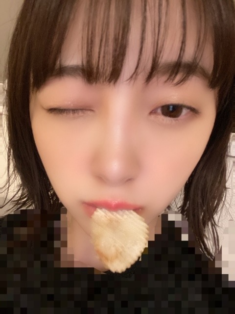
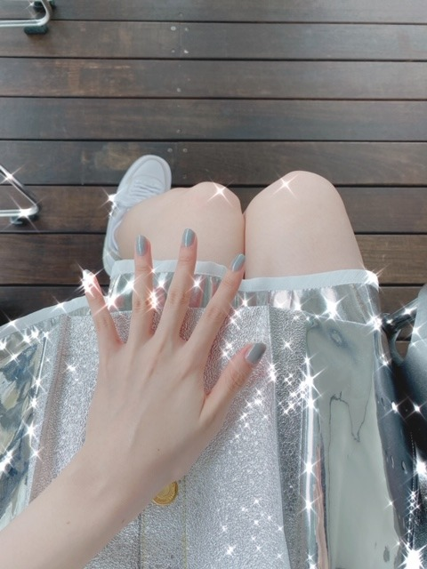

2020/0729Wed夏の星座がみたい
こんばんは！

なんかちょっとかなしげな顔

夏の星座ってなにがありますか？
地元ではホタルがたくさんいて
綺麗だったなぁ
またたくさんのホタルを見たいです
2nd写真集公式Twitter
で突然ですが
堀未央奈が彼女だったら
連載はじめました〜
写真集の裏テーマが彼女感なので
彼氏目線の動画を自作自演で
あげていこうと思います
どんなのがみたいですか？
教えてください^ - ^


※服に犬の毛が付きすぎてたのでモザイクしました
今日はポテチが出てきてるよ〜
みてね〜
ps.
真夏さんちゃっかりわたしの
ブログみてるのカワイイ^ - ^
なめてるでしょ！とかいつも
言ってくるけど今日もずっと
隣でニコニコゲラゲラ
たのしそうでした^ - ^笑
わたしのこと好きやなあ^ - ^

では！
2020/07/29 21:06
コメント(301)
みおな、こんばんは。
星空ですか。いいですね。
実家では、いろんな星座が観れましたよ。
これからは、夏の星座ですよね。
代表格は、さそり座。S字なので見つけやすいと思います。
その左手にあるのが、いて座です。
天頂には、白鳥座、こと座、わし座からなる夏の大三角形があります。
都会では、なかなか見られないかもしれませんね。ちょっと郊外に行けば、これらの星座くらいは、見られると思いますよ。
星空ですか。いいですね。
実家では、いろんな星座が観れましたよ。
これからは、夏の星座ですよね。
代表格は、さそり座。S字なので見つけやすいと思います。
その左手にあるのが、いて座です。
天頂には、白鳥座、こと座、わし座からなる夏の大三角形があります。
都会では、なかなか見られないかもしれませんね。ちょっと郊外に行けば、これらの星座くらいは、見られると思いますよ。
おこんばんわ
未央奈さんのブログ更新して頂いた時に毎回コメントを送りたい気持ちでいっぱいなのですが、なかなか出来ていないのが現状ですが、戻りに戻って必ず拝見させて頂いてます！！！
TVでの拝見は勿論、ブログなどで元気やpowerや自信や幸せ、自分にとっても新たな発見、自分を見つめ直すキッカケを与えてくれたりと、大切な御方でい！！
これからも微力ながら自分なりの気持ちとエールを未央奈さんに！！
夏の星座
正直なトコロ、思いうかびませんでした！自分も未央奈さんファンの皆様のanswerが知りたいです！！
CP真夏さんのお言葉
「なめてるでしょ」をお聴きした瞬間、失礼ながら笑ってしまいました
しかし、これが御二人らしい良い距離感、良い関係なんでしょう(羨ましいなぁ)
未央奈さんのお言葉
カワイイ「ちゃっかり」
真夏さんへの尊敬が分厚いからこそ、普段は良い距離感でカワイイ！！
未央奈さんのブログ更新して頂いた時に毎回コメントを送りたい気持ちでいっぱいなのですが、なかなか出来ていないのが現状ですが、戻りに戻って必ず拝見させて頂いてます！！！
TVでの拝見は勿論、ブログなどで元気やpowerや自信や幸せ、自分にとっても新たな発見、自分を見つめ直すキッカケを与えてくれたりと、大切な御方でい！！
これからも微力ながら自分なりの気持ちとエールを未央奈さんに！！
夏の星座
正直なトコロ、思いうかびませんでした！自分も未央奈さんファンの皆様のanswerが知りたいです！！
CP真夏さんのお言葉
「なめてるでしょ」をお聴きした瞬間、失礼ながら笑ってしまいました
しかし、これが御二人らしい良い距離感、良い関係なんでしょう(羨ましいなぁ)
未央奈さんのお言葉
カワイイ「ちゃっかり」
真夏さんへの尊敬が分厚いからこそ、普段は良い距離感でカワイイ！！
夏の星座と言えば、さそり座ですかね。
中でもアンタレスは明るくて赤い星なので、目立ちますよ。
たまに火星と間違ったりしますけど♪☆
中でもアンタレスは明るくて赤い星なので、目立ちますよ。
たまに火星と間違ったりしますけど♪☆
未央奈、楽しんでるね！
それが一番！！
それが一番！！
堀ちゃん、こんばんは。
夏の星座といえば、
「熱帯夜の日に扇風機の取り合いでいざこ座」( ｀ロ´ﾉﾉ 扇風機 ﾍﾍ￣ロ￣#)
ポテチ好きなのー？
一度袋を開けると、絶対途中では止まらないよね
夏の星座といえば、
「熱帯夜の日に扇風機の取り合いでいざこ座」( ｀ロ´ﾉﾉ 扇風機 ﾍﾍ￣ロ￣#)
ポテチ好きなのー？
一度袋を開けると、絶対途中では止まらないよね
みおにゃ お疲れです
応援しとるよー^ ^
応援しとるよー^ ^
#惜しい
堀様好きの僕のために、かみさんが、永○園のお茶漬けを買ってきてくれるのは有り難いのですが、ちょっと坂の種類が違うので、堀様のブロマイドは手に入らないのでありました。
ずきゅん。
堀様好きの僕のために、かみさんが、永○園のお茶漬けを買ってきてくれるのは有り難いのですが、ちょっと坂の種類が違うので、堀様のブロマイドは手に入らないのでありました。
ずきゅん。
未央奈ブログ更新ありがとう！
コメント遅れてゴメン
彼女感サイコー！未央奈が彼女だったらもう何も要らない！
夏の星座って夏の大三角とかかな？
よく分かんない！
これからも応援してるよ！
体調には気をつけてね！
by未央奈推しのブラックコーヒー
コメント遅れてゴメン
彼女感サイコー！未央奈が彼女だったらもう何も要らない！
夏の星座って夏の大三角とかかな？
よく分かんない！
これからも応援してるよ！
体調には気をつけてね！
by未央奈推しのブラックコーヒー
みおな
今日もお疲れ様です
夏の星座といえば、やっぱし夏の大三角形かな？
夏場は、快晴になる事が少ないから、中々見るのが難しいです
空を見るのが好きな理由は、目に見えてないだけで、存在してる星というのは数え切れないくらいあって、見えないのは地球から離れすぎてるだけで、近くに行けば、本当はすごく光を放っているはずなんですね
誰の目にも見えないのに、遥か遠くで光り輝いてる星があると思って空を見るのが、悲しすぎるくらい綺麗だから、空を見るのが好きなんです（相当天気が良い状態で夜明け前か日暮れ前の辛うじて見えるような星の事をいい完全に夜になると見えない星をいいます）
誰にも見られないのに光るって悲しいけど、とても綺麗だと思います
それは目に見えない所で頑張ってる人の励みなような気もしてきます
話が逸れたけど、目に見える星も綺麗だけど、遠すぎて見えない星を想像して、空を見るのもいいかもしれませんね
ポテチの動画見たよ
みおなが彼女だったら、もう他に何もいらないかもね笑
真夏と仲良くしてて嬉しいです
色んな人からいじられるけど、みんなから愛されてるよね
また可愛い写真送って下さい
ありがとうございました
今日もお疲れ様です
夏の星座といえば、やっぱし夏の大三角形かな？
夏場は、快晴になる事が少ないから、中々見るのが難しいです
空を見るのが好きな理由は、目に見えてないだけで、存在してる星というのは数え切れないくらいあって、見えないのは地球から離れすぎてるだけで、近くに行けば、本当はすごく光を放っているはずなんですね
誰の目にも見えないのに、遥か遠くで光り輝いてる星があると思って空を見るのが、悲しすぎるくらい綺麗だから、空を見るのが好きなんです（相当天気が良い状態で夜明け前か日暮れ前の辛うじて見えるような星の事をいい完全に夜になると見えない星をいいます）
誰にも見られないのに光るって悲しいけど、とても綺麗だと思います
それは目に見えない所で頑張ってる人の励みなような気もしてきます
話が逸れたけど、目に見える星も綺麗だけど、遠すぎて見えない星を想像して、空を見るのもいいかもしれませんね
ポテチの動画見たよ
みおなが彼女だったら、もう他に何もいらないかもね笑
真夏と仲良くしてて嬉しいです
色んな人からいじられるけど、みんなから愛されてるよね
また可愛い写真送って下さい
ありがとうございました
みおたんと、一緒にプラネタリウムに
未央奈ちゃん、Route246の衣装でちょっと悲しげな
顔の未央奈ちゃんもとても美人だ
良いぞ 良いぞ 良いぞ
良いぞ 良いぞ
自然と笑顔になる
どうも有り難う！！
では
顔の未央奈ちゃんもとても美人だ
良いぞ
自然と笑顔になる
どうも有り難う！！
では
どんな動画をみたいか？
本当に思いつきですが、真夏の花火大会をモバイルで開催中なので、夏祭りで一緒に過ごしてる風で。
本当に思いつきですが、真夏の花火大会をモバイルで開催中なので、夏祭りで一緒に過ごしてる風で。
星座名：へびつかい（蛇遣）
略符：Oph
学名：Ophiuchus(i)
概略位置｜赤経：17h10m |赤緯：-4°
位置のめやす：8月5日
「位置のめやす」項は、星座の概略の中心位置が東京において中央標準時20時に子午線を通過する月日を示したものである。（理科年表 国立天文台 編 より）
8月5日をめやすに、へびつかい座、が見えると思います。
略符：Oph
学名：Ophiuchus(i)
概略位置｜赤経：17h10m |赤緯：-4°
位置のめやす：8月5日
「位置のめやす」項は、星座の概略の中心位置が東京において中央標準時20時に子午線を通過する月日を示したものである。（理科年表 国立天文台 編 より）
8月5日をめやすに、へびつかい座、が見えると思います。
堀ちゃん、おはよう！
星座みた？
僕はみてないよ。
外は夜でも暑いから。
でも、東京はもっと熱いだろうね。
星座を家の中から見れたらいいなって思う。
きれいだよね。
また、星座の研究をしてみるよ！！
では！！
星座みた？
僕はみてないよ。
外は夜でも暑いから。
でも、東京はもっと熱いだろうね。
星座を家の中から見れたらいいなって思う。
きれいだよね。
また、星座の研究をしてみるよ！！
では！！
おはよう、未央奈ちゃん
真夏さんと(独特な？笑)良い関係だね。
微笑ましいです。
でも負けず劣らず未央奈ちゃんも真夏さんの事好きでしょ？笑
真夏さんと(独特な？笑)良い関係だね。
微笑ましいです。
でも負けず劣らず未央奈ちゃんも真夏さんの事好きでしょ？笑
未央奈さん、ブログ更新ありがとう。どこにでもいるおっさんです。
真夏とのやり取り大好きです。
みんな仲がいいよね。
羨ましい！
では！
ひでき
真夏とのやり取り大好きです。
みんな仲がいいよね。
羨ましい！
では！
ひでき
可愛すぎる。
未央奈大すこ！！
堀ちゃん、元気～？
暑いです！
暑いです！
おつかれ！ 未央奈！
都会で自然に触れる機会が少なくて、
不便だね。
おまけに、あまり外に出れないからね。
星座がみたいよね！
私が星座になりましょう！！
では！！
都会で自然に触れる機会が少なくて、
不便だね。
おまけに、あまり外に出れないからね。
星座がみたいよね！
私が星座になりましょう！！
では！！
星座の勉強をしようと思います！！
未央奈ちゃん大好き❤
あーんとか手繋ぎとか見たいです****
あーんとか手繋ぎとか見たいです****
すっぴん
こんにちは〜
、、今日は、、少し、、陽射しが、あったね〜
、、昨日の夢に、、野球部の、キレイな、マネージャーの、、女の子、、（笑）が、現れて、、
、、進学校らしい、、野球部の監督さんが、、試合後に、、野球部のみんなを、、座らせて、、厳しい話をしていた。。
、、意味が、、わからなかったけど、、（笑）
、、夏の正座〜星座、、（笑）ってことだね〜
、、じゃあ、、またね〜
、、今日は、、少し、、陽射しが、あったね〜
、、昨日の夢に、、野球部の、キレイな、マネージャーの、、女の子、、（笑）が、現れて、、
、、進学校らしい、、野球部の監督さんが、、試合後に、、野球部のみんなを、、座らせて、、厳しい話をしていた。。
、、意味が、、わからなかったけど、、（笑）
、、夏の正座〜星座、、（笑）ってことだね〜
、、じゃあ、、またね〜
未央奈！
元気？
最近どうですか？
元気？
最近どうですか？
未央奈ちゃん、こんにちは。
モバメありがとう、癒されます。
さっき、渋谷のTSUTAYAでパネル展見てきたよ。凄く大きな未央奈ちゃんがいて、ビックリしました。横に真夏キャプテンもいた。
写真集買ってパネルプレゼントに応募したよ、当りたいなぁ～
もうすぐ梅雨明け、熱中症に気をつけて良い体調で過ごしてくださいね。
乃木坂46と頑張ってるcuteでsmartな未央奈ちゃんを応援しています。
モバメありがとう、癒されます。
さっき、渋谷のTSUTAYAでパネル展見てきたよ。凄く大きな未央奈ちゃんがいて、ビックリしました。横に真夏キャプテンもいた。
写真集買ってパネルプレゼントに応募したよ、当りたいなぁ～
もうすぐ梅雨明け、熱中症に気をつけて良い体調で過ごしてくださいね。
乃木坂46と頑張ってるcuteでsmartな未央奈ちゃんを応援しています。
アナスターシャのダンスが素敵！！
ほりさんこんにちは
なぜか分からないですけど、私のコメントはまた表示されてませんでした。ただ一回ではありません、何回も。何も問題ないの内容だと思います。。。
何か変なこと言ってしまったのか?私は。。。
真夏さんとみおなさん二人どもが好きです。
大変な時期でみんなお元気ね
なぜか分からないですけど、私のコメントはまた表示されてませんでした。ただ一回ではありません、何回も。何も問題ないの内容だと思います。。。
何か変なこと言ってしまったのか?私は。。。
真夏さんとみおなさん二人どもが好きです。
大変な時期でみんなお元気ね
未央奈ちゃん今年のハロウィンのコスプレ
ハーレクイン姿、バニーガール姿も見てみたいな
ファンとして一回は観とかないとな？
変な意味で言ってる訳じゃないからね。
ハーレクイン姿、バニーガール姿も見てみたいな
ファンとして一回は観とかないとな？
変な意味で言ってる訳じゃないからね。
こんばんはっ。モバメありがとー☆
wowwowダンス未央奈verめっちゃ良かったよ♪
(*^^*)
衣装、髪型、スタイル、そしてダンスと全部のバランスが未央奈が1番良くて好きだな！って思ったよ！
歌番組とかライブでもどんどん存在感出してってほしい(゜▽゜*)
wowwowダンス未央奈verめっちゃ良かったよ♪
(*^^*)
衣装、髪型、スタイル、そしてダンスと全部のバランスが未央奈が1番良くて好きだな！って思ったよ！
歌番組とかライブでもどんどん存在感出してってほしい(゜▽゜*)
ほちゃブログ更新ありがとうー！
今の髪色めっちゃ好きです＞＞
とっても似合ってるよ
今の髪色めっちゃ好きです＞＞
とっても似合ってるよ
ブログありがとう！！コメント書くの遅くなっちゃったー(泣)新衣装かわいいね！ダンス動画上がってたの何回も見た！！しなやかで、可愛くて、好き笑笑 彼女目線の写真アップしてくれるの本当に嬉しいよおお！彼女なってほしいもん私女だけど笑笑 背中ツンツンして、ねぇねぇ！って呼んでる姿みたいなぁ笑笑
そういえば、髪の毛未央奈ちゃんの前髪になりたくて、今日初めて自分で切ったんだけど、まだ長かった笑笑
まなったん未央奈ちゃんのブログ見てくれてるんか！！まなったんと未央奈ちゃんの関係性めっちゃ好き笑笑 早く会いたい〜！
ももんが
そういえば、髪の毛未央奈ちゃんの前髪になりたくて、今日初めて自分で切ったんだけど、まだ長かった笑笑
まなったん未央奈ちゃんのブログ見てくれてるんか！！まなったんと未央奈ちゃんの関係性めっちゃ好き笑笑 早く会いたい〜！
ももんが
未央奈、おはよう愛してる今日も可愛いね❤️
ほはよう！ 堀！
8月だね！
暑いけど、がんばりましょうね！
8月だね！
暑いけど、がんばりましょうね！
もっと前みたいにテレビでいっぱいウィンクしてほしいです7
未央奈～！
おはよう～☀️
今日の夜、歌番組出るんだね♪
楽しみ！観ます☺️
あとRoute 246のwowwowダンス動画観たよ！
未央奈可愛くて美し～い！！
おはよう～☀️
今日の夜、歌番組出るんだね♪
楽しみ！観ます☺️
あとRoute 246のwowwowダンス動画観たよ！
未央奈可愛くて美し～い！！
未央奈〜 もうすぐ梅雨明けだね
暑くなるけど ガンバやで^ - ^
暑くなるけど ガンバやで^ - ^
ダンスを一緒に踊りたい！！
あとは、かまちょって言ってる未央奈ちゃんとか朝、可愛く起こして欲しい！！
↑↑↑
動画の希望!!!
今日も大好きです！！
あとは、かまちょって言ってる未央奈ちゃんとか朝、可愛く起こして欲しい！！
↑↑↑
動画の希望!!!
今日も大好きです！！
堀ちゃん、やっほ～！
元気？
元気？
お疲れ様です、堀さん。
そうですね、堀さんの2nd写真集のパネル展ですけどね、行ってないですね
正直、7月の4連休にね、堀さんのパネル展に行くことを楽しみにして、ちょっと前からね、日常をどうにか過ごしていた感じではあったのですけどね。
このご時世とあって、泣く泣くこらえた、という感じですね
そうですね、めちゃくちゃ行きたかったのに衝動を抑えた、という感じですね
そうですね、個人的な判断で行かなかったですけどね。
だけど、堀さんを応援したいという気持ちでいっぱい、ということだけはお伝えしておきます。
そうですね、個人的にはもうすぐ夏期休暇があって、例年ならこの時期は旅行に行くのですけど、今年はね…。
そうですね、少しなにかネガティブな個人的な話ばかりしましたね。
Route246、よく聴いてます。
堀さんのRoute246のダンス、とても魅了されますね
またなにかお話したいことがあればコメントします。
そうですね、次回はもっと明るい話題をコメントしたいですね！
それでは暑くなってきましたからね、健康にはお気をつけてお過ごしください。
そうですね、堀さんの2nd写真集のパネル展ですけどね、行ってないですね
正直、7月の4連休にね、堀さんのパネル展に行くことを楽しみにして、ちょっと前からね、日常をどうにか過ごしていた感じではあったのですけどね。
このご時世とあって、泣く泣くこらえた、という感じですね
そうですね、めちゃくちゃ行きたかったのに衝動を抑えた、という感じですね
そうですね、個人的な判断で行かなかったですけどね。
だけど、堀さんを応援したいという気持ちでいっぱい、ということだけはお伝えしておきます。
そうですね、個人的にはもうすぐ夏期休暇があって、例年ならこの時期は旅行に行くのですけど、今年はね…。
そうですね、少しなにかネガティブな個人的な話ばかりしましたね。
Route246、よく聴いてます。
堀さんのRoute246のダンス、とても魅了されますね
またなにかお話したいことがあればコメントします。
そうですね、次回はもっと明るい話題をコメントしたいですね！
それでは暑くなってきましたからね、健康にはお気をつけてお過ごしください。
未央奈 ダンス可愛い^^
未央奈ちゃん、こんにちは♪
かに座を知っています。
僕は夜空を見てこれがかに座です、とか
これが山羊座です、というのを見つけるのが
不得意です。
自ら光り輝いている星を恒星といいます。
今回のブログの写真は１枚目のが好きです。
未央奈ちゃんが好きです。
今日は、昨日録画した映画を見ます。
２時間１４分の映画です。
未央奈ちゃんがどうぶつの森という
ゲームで遊んでるそうなので
最近パソコンで動物の写真を眺めています。
またコメントするね。
かに座を知っています。
僕は夜空を見てこれがかに座です、とか
これが山羊座です、というのを見つけるのが
不得意です。
自ら光り輝いている星を恒星といいます。
今回のブログの写真は１枚目のが好きです。
未央奈ちゃんが好きです。
今日は、昨日録画した映画を見ます。
２時間１４分の映画です。
未央奈ちゃんがどうぶつの森という
ゲームで遊んでるそうなので
最近パソコンで動物の写真を眺めています。
またコメントするね。
今日から8月ですね！
早速、嬉しい情報が流れてきましたね。
関東、東海で梅雨明けしましたね
岐阜、名古屋は暑いみたいだよ
岐阜では36℃。名古屋では35℃
多治見では37℃だよ
それに比べて東京は30℃まで上がったけど
そこまで、では無いよね？
モバメで質問してって言ってたよね！
#堀未央奈への質問
今、行きたい場所は？
原宿、表参道、信濃町で未央奈ちゃんおすすめの
場所とかありますか？
乃木坂の中でメンバー1おしゃれじゃん！
早速、嬉しい情報が流れてきましたね。
関東、東海で梅雨明けしましたね
岐阜、名古屋は暑いみたいだよ
岐阜では36℃。名古屋では35℃
多治見では37℃だよ
それに比べて東京は30℃まで上がったけど
そこまで、では無いよね？
モバメで質問してって言ってたよね！
#堀未央奈への質問
今、行きたい場所は？
原宿、表参道、信濃町で未央奈ちゃんおすすめの
場所とかありますか？
乃木坂の中でメンバー1おしゃれじゃん！
おつかれやで！
どもどもー、モバメありがとう！
#堀未央奈への質問すごい数になってるね！
答えるの大変そうだけどがんばだよ( *・ω・)ノ
俺もつぶやいたけど、こっちでもコメントしちゃいます。
・最近嬉しかったことは？
・乃木坂のメンバーでお姉ちゃんにしたいと思うのは？(卒業生でも可です)
・好きな曜日はありますか？俺は日曜日が好きです。
(理由は乃木坂工事中や好きな番組が多いのと1週間の終わりと始まりって感じがして好きだから。)
・作詞してる？
・クレヨンしんちゃんで好きなキャラクターは？
・いろいろ気力が湧かない時はどうしたら良いと思う？
よろしくお願いしますー。聞きたいことはたくさん。m(_ _)m
#堀未央奈への質問すごい数になってるね！
答えるの大変そうだけどがんばだよ( *・ω・)ノ
俺もつぶやいたけど、こっちでもコメントしちゃいます。
・最近嬉しかったことは？
・乃木坂のメンバーでお姉ちゃんにしたいと思うのは？(卒業生でも可です)
・好きな曜日はありますか？俺は日曜日が好きです。
(理由は乃木坂工事中や好きな番組が多いのと1週間の終わりと始まりって感じがして好きだから。)
・作詞してる？
・クレヨンしんちゃんで好きなキャラクターは？
・いろいろ気力が湧かない時はどうしたら良いと思う？
よろしくお願いしますー。聞きたいことはたくさん。m(_ _)m
堀ちゃん、大好きだよー
ネイルの色可愛い！
みおなちゃんのネイルカラーの車買おうかな笑
みおなちゃんのネイルカラーの車買おうかな笑
ブログ更新ありがとう
未央奈かわいい
未央奈かわいい
夏の星座といえば蠍座かな。アンタレス、赤い星。
あと夏は天の川が綺麗に見えますよね。
ペルセウス座流星群もおすすめです！
あと夏は天の川が綺麗に見えますよね。
ペルセウス座流星群もおすすめです！


毎日、毎日可愛いねぇ♪
もう美しすぎて困っちゃうよ
顔が好き、声が好き、髪型が好き
ぜーんぶ大好きです
やっぱ、人間美しいもの、きれいなものを
見て一日に一度は目の保養をする必要が
あると思うんだ
可愛くてありがとうね
クレオパトラか楊貴妃か
未央奈ちゃんか
本当に美の女神ヴィーナスより
美しいと思う
知らんけど